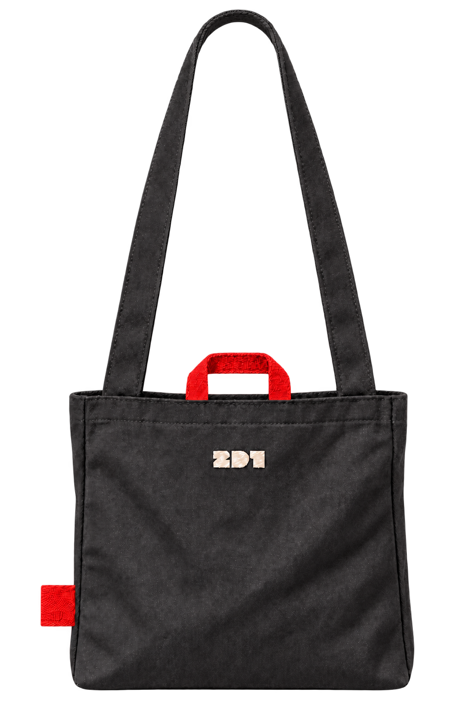

2D1は、ブランド、デジタルプロダクト、アイデアを横断して活動する独立したデザインスタジオです。初期の構想から、見た目や使い心地、世の中でのあり方まで、一緒にかたちにしていきます。
クライアントワークと並行して、気の合う人たちと自分たちのものをつくり、ものを選び集めています。私たちはそれらをFamiliar Characters— 日々の暮らしを静かに重ね、やがて私たちの日常の一部になっていく仲間たちです。
スタジオ
明確なアイデアに、
個性を。
私たちの中心にあるのは、デザインスタジオとしての仕事です。
小さなチームや事業者とともに、アイデアを明確にし、その個性を形にします。戦略やビジュアルアイデンティティから、インターフェースのピクセルひとつまで。新鮮な視点と手を動かす姿勢で向き合います。
目指すのは、明確で、直感的に使えて、あなただけの個性があるものをつくることです。


サービス
- デザインコンサルティング
- アドバイザリー、ディレクション
- デジタルプロダクトデザイン
- ウェブサイト、UX/UI、デザインシステム
- ブランドデザイン
- アートディレクション、グラフィックデザイン、ビジュアルアイデンティティ
ショップ
身近なものたちの家。
つくる喜びは、私たちの活動の中心にあります。自分たちのためにつくるものも、クライアントのための仕事と同じところから始まります。明確なアイデアと、そのものらしさを生むディテールから。

開発中
Today Bag
私たちが初めてつくる日用品。どこへでも連れていける帆布のトートです。シンプルなかたち、便利な内ポケット、そして自分のものだとわかる赤のアクセント。
特徴 01
素材：アルマダ8号帆布
アルマダ8号帆布。しっかりとした厚みとハリのある綿の生地を選びました。日々使うほどに、その人らしい表情が育っていきます。
特徴 02
かたちと持ち方
約40 × 36 cmの、正方形に近い本体。マチは10 cm。腰のあたりまで届く長いショルダーストラップと、手で持つためのコンパクトな赤いハンドルを備えています。
特徴 03
内ポケットとボトルバンド
底の近くにある幅広の内ポケットは、鍵やAirPodsなどの小物のために。別のバンドは、ボトルや折り畳み傘など、細長いものを立てて支えます。
特徴 04
マグネットの留め具
開口部の縁にマグネットを内蔵。留め具を表に見せず、バッグの口を閉じられます。
特徴 05
織りタグ：The Red Pixel
2D1を象徴するシンボル。左下の縫い目に添えた正方形の織りタグが、このバッグらしい赤のアクセントになります。
特徴 06
刺繍のロゴ
ベージュの2D1ロゴは刺繍で表現。濃い色の帆布に、立体感と手触りを添えています。反対側には、チャコールの控えめなピクセルの目があります。
仕様
- 素材
- アルマダ8号帆布（綿）。
- 生産国
- 日本製
- サイズ
- 約 幅40 × 高さ36 × マチ10cm。ストラップを除きます。
- ストラップ
- 長いダークカラーのショルダーストラップと、コンパクトな赤い手持ちハンドル。
- 赤いタグ
- 左下のサイドの縫い目に付けた、四角い赤い織りネーム。
- ポケット
- ボトルを支えるバンドと、小物を収納するための底に沿った幅広ポケット。
- 開口部
- 開口部の折り返しに縫い込んだマグネット留め。
- ディテール
- 前面には控えめなチャコール色のピクセルの目。背面の上部中央には、小さなベージュの2D1刺繍ロゴ。
試作段階の仕様です。サイズやディテールは製品化までに変更になる場合があります。
Today Bagはまだ開発中です。あなたの日々に迎えたいと思っていただけたら、ぜひお知らせを受け取るためにご登録ください。